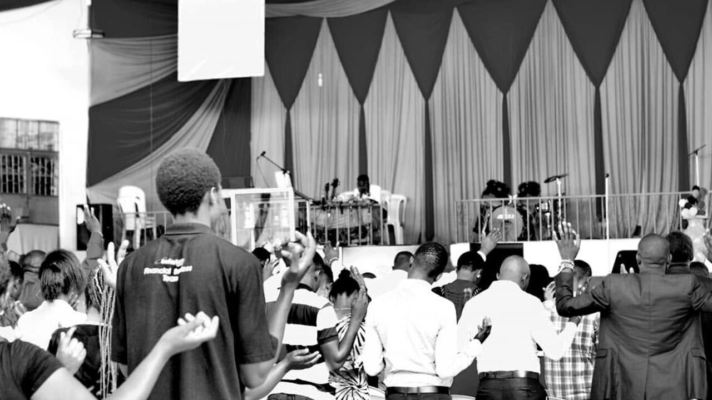

Give by M-Pesa
- Open M-Pesa and choose Lipa na M-Pesa, then Pay Bill.
- Business number: 4069983
- Account number: Tithes or Giving.
- Enter the amount and your M-Pesa PIN.
Questions about giving? WhatsApp 0710 772 227.

Your tithes and offerings support worship, outreach and care for families in Embu and beyond.
“Each one must give as he has decided in his heart, not reluctantly or under compulsion, for God loves a cheerful giver.”2 Corinthians 9:7 (ESV)
Questions about giving? WhatsApp 0710 772 227.
You can give your tithe or offering in person during any Sunday service at Embu Central Campus.
Plan a visit“Each of you should give what you have decided in your heart to give, not reluctantly or under compulsion, for God loves a cheerful giver.” (2 Corinthians 9:7)